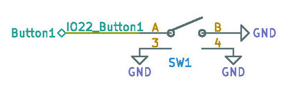
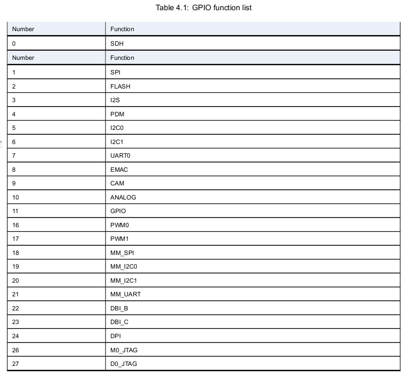
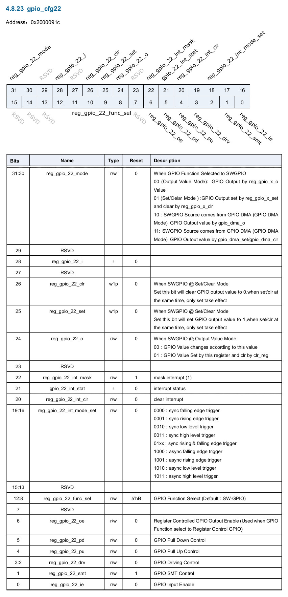
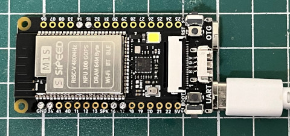
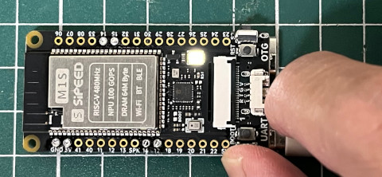

參考資訊：
https://github.com/bouffalolab/bl808_linux
https://wiki.sipeed.com/hardware/en/maix/m1s/m1s_dock.html
Button是連接到IO22



.global _start
.equiv gpio_cfg8, 0x200008e4
.equiv gpio_cfg22, 0x2000091c
.text
.org 0x0000
_vector:
j _start
.org 0x0200
_start:
fence
fence.i
icache.iall
csrr a5, mhcr
ori a5, a5, 1
csrw mhcr, a5
fence
fence.i
fence
fence.i
dcache.iall
csrr a5, mhcr
lui a4, 1
addi a4, a4, 62
or a5, a5, a4
csrw mhcr, a5
fence
fence.i
li t0, (1 << 6) | (11 << 8) | (1 << 24)
li a0, gpio_cfg8
sw t0, 0(a0)
li t0, (1 << 0) | (1 << 4) | (11 << 8)
li a1, gpio_cfg22
sw t0, 0(a1)
li t2, (1 << 24)
0:
lw t1, 0(a1)
srl t1, t1, 4
and t1, t1, t2
li t0, (1 << 6) | (11 << 8)
or t0, t0, t1
sw t0, 0(a0)
j 0b
.end
完成

